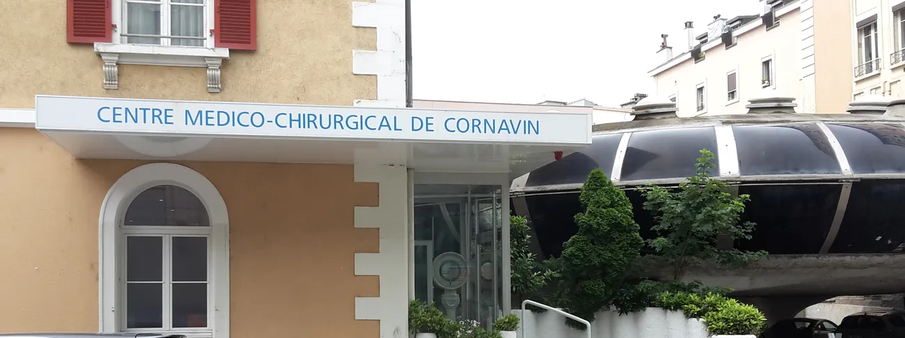

Un médecin à deux pas de la gare.
Urgences pour adultes et enfants, avec ou sans rendez-vous, tous les jours de la semaine y compris les jours fériés. Médecins généralistes et spécialistes dans le même bâtiment.
Prochains départs : les horaires
Les urgences accueillent adultes et enfants avec ou sans rendez-vous. Les consultations programmées ont lieu à l’heure de bureau, sur rendez-vous.
14h00 – 18h00
Plus d’un siècle au cœur de Genève
Le CMC-Cornavin est installé depuis plus de cent ans dans le système de santé genevois. Il réunit urgences, médecine de famille, spécialistes et soins paramédicaux.
- Urgences 7 j/7Adultes et enfants, avec ou sans rendez-vous, jours fériés compris.
- Assurance maladieTous les médecins ont le droit de pratiquer délivré par les autorités genevoises, avec facturation à charge de la LAMal.
- Langues parléesFrançais, anglais, arabe, portugais, espagnol, roumain, persan.
- AccèsEn plein centre de Genève, près de la gare Cornavin, bien desservi par les transports publics. Parking pour les patients, places en nombre limité.
- AttenteLe système de prise en charge s’efforce de limiter au maximum le temps d’attente.
Spécialités et services
Consultations médicales
- Médecine générale et de famille
- Pédiatrie et chirurgie pédiatrique
- Gynécologie-obstétrique
- Urologie et chirurgie urologique
- Cardiologie
- Psychiatrie
- Orthopédie-traumatologie
- Gériatrie
- Médecine interne
- Ultrasonographie
Consultation sur rendez-vous, au cabinet du médecin au sein du centre.
Services médicaux et paramédicaux
- Urgences médicales et chirurgicales 7 j/7
- Radiologie et échographie
- Analyses médicales en urgence
- Physiothérapie
- Nutrition et diététique
- Massothérapie et drainage lymphatique
- Soins infirmiers
Les médecins et praticiens
Paramédical
L’équipe compte aussi des infirmières et une équipe d’accueil et de facturation.
Médecins spécialistes : rejoignez-nous
Le centre recherche des médecins spécialistes pour renforcer son équipe, dans un environnement de travail moderne, aux côtés d’autres spécialistes, d’infirmières qualifiées et de professionnels de la santé.
Condition : être autorisé à pratiquer à charge de la LAMal dans le canton de Genève. Envoyez votre CV et une lettre de motivation à contact@cmccornavin.ch.
Nous trouver, nous appeler
- Adresse
- Rue du Jura 1-3
1201 Genève - Téléphone
- 022 595 11 11
- Second numéro
- 022 595 11 02
- contact@cmccornavin.ch
Pour une consultation, réservez directement le créneau d’un médecin. Pour une urgence, présentez-vous pendant les heures d’ouverture, sans rendez-vous.
Prendre rendez-vous en ligne